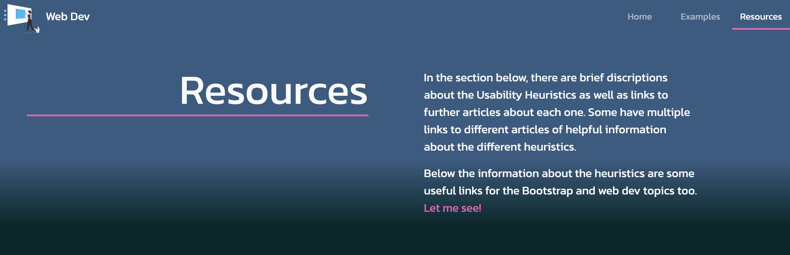
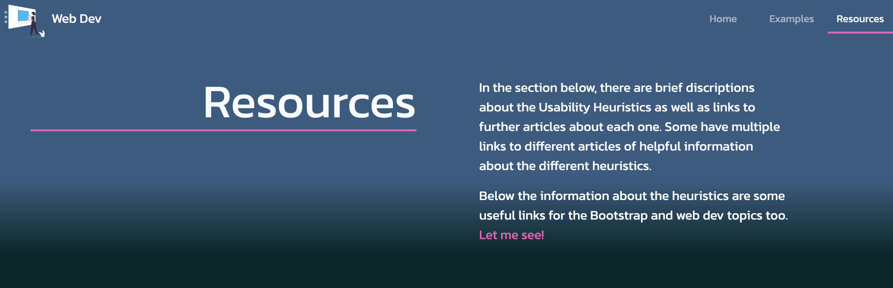

Web Dev
Home Examples ResourcesIn the section below, there are examples of the usability heuristics. These examples are very simplified, but are all examples of very easily used usability heuristics that you will most likely use when you go to develop your own website. This knowledge is very important, particularly for the "Usability" relevant implication and your ability to discuss how you are addressing this.
The following examples of visibility of system status show some of the very subtle but effective uses of this heuristic. It is important to make sure that your users understand where they are within your website as much as possible. We can see in the nav bar that the current page is displayed with a coloured underline. We can also see that in there is a hover effect when the user is hovering over the nav bar link too. This allows them to more easily and efficiently use your website.


 


Consistency is one of the easiest heuristics to use and identify. The examples here show consistency across the design of different pages. In the example here we some the use on internal consistency where the different pages are sharing many of the same designs and outlines. We also see consistency of colour too.
Although an easy heuristic to identify, being able to create an aesthetic that doesn't just tick the boxes of design principles but comes together as a whole. In the following examples we see the use of a minimalist aesthetic. Content and information is clear. The use of colour and contrast is appropriate and there is just enough ant not too much going on in the page. The images used are also simple and not too over the top. The consistency in the types of images also adds to the aesthetic.